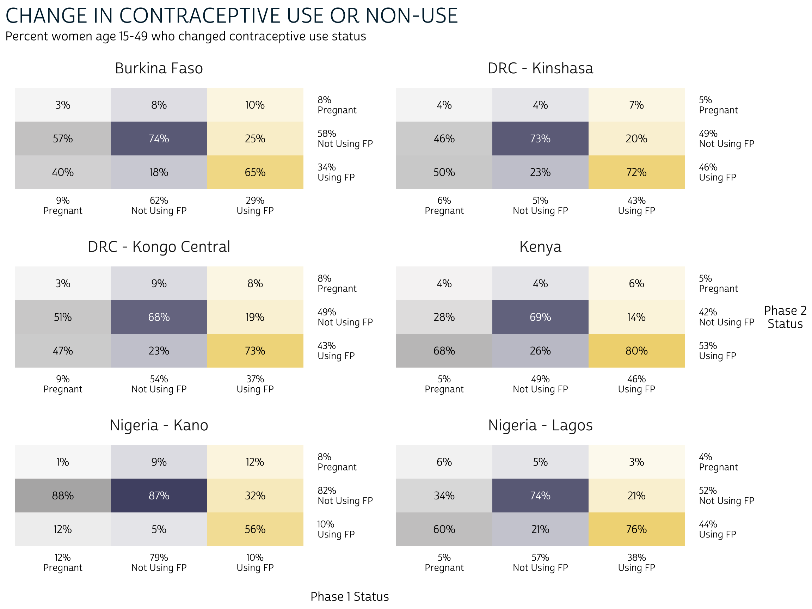
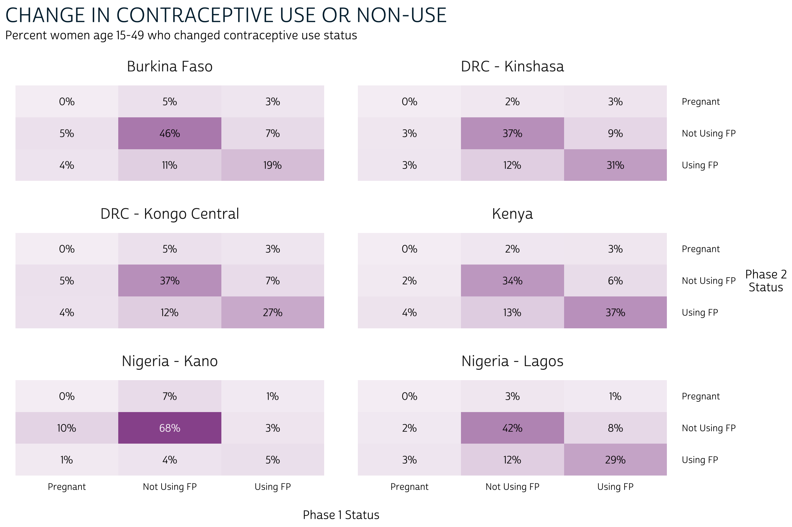

In our last post, we demonstrated how to calculate key indicators for womens family planning status with new panel surveys from our partners at PMA. When you download PMA data from IPUMS PMA, you can include multiple samples together in the same data extract. Currently, Phase 1 and Phase 2 data are available for six samples, and weve devoted much of this series to reproducing and synthesizing the major findings published in individual PMA reports for each sample:
Now that weve learned how to compare population-level estimates for indicators in each population with grouped bar charts, wed like to dig into some of the other data visualization tools that are commonly used for two-phase panel data. Well quickly recap our approach to building bar charts, and then well explore color-coded crosstabs - or heatmaps - followed by alluvial plots built with ggalluvial, an extension to the ggplot2 package for R.
Setup
In addition to ggalluvial, well
also showcase just a few of the helpful functions in scales, a package devoted to making
axes, labels, and legends easier to read (in particular, well use percent
to transform proportions into percentages labeled with the
% symbol). Youll need those two packages, plus the three
packages weve already used at length in this series: tidyverse, ipumsr, and srvyr.
As a reminder, our last post featured a wide format data extract with Female Respondents only (other household members not participating in the panel study are excluded). If youre following along with this series, you can use the same extract again in this post; if not, youll need to build a new extract that contains all of the variables well use here (preselected variables are added automatically):
- RESULTFQ - Result of female questionnaire
- PANELWEIGHT - Phase 2 female panel weight
- RESIDENT - Household residence / membership
- PREGNANT - Pregnancy status
- GEOCD - Province, DRC
- GEONG - State, Nigeria
- CP - Contraceptive user
- COUNTRY - PMA country (preselected)
- EAID - Enumeration area (preselected)
Todays analysis will focus on three recoded variables we derived in our last post:
POP- Population of interestFPSTATUS_1- Pregnant, using contraception, or using no contraception at Phase 1FPSTATUS_2- Pregnant, using contraception, or using no contraception at Phase 2
Finally, our analysis dropped cases for women who only completed one of the two Female Questionnaires, were not members of the de facto population, or skipped critical questions regarding current use of family planning. If youd like a refresher on the steps we took to load, filter, and recode data from our previous post, click the button below:
Remind me about our data cleaning steps
# import the data extract and metadata files
dat <- read_ipums_micro(
ddi = "data/pma_00106.xml",
data = "data/pma_00106.dat.gz"
)
# inclusion criteria for analysis
dat <- dat %>%
filter(
RESULTFQ_2 == 1, # must have completed Phase 1 FQ
RESIDENT_1 %in% c(11, 22) & # must be de facto population (both phases)
RESIDENT_2 %in% c(11, 22),
CP_1 < 99 & CP_2 < 99 # must answer "current FP use" question (both phases)
)
# custom variables: `POP` and `FPSTATUS`
dat <- dat %>%
mutate(
# Population of interest (country + region, where applicable)
POP = case_when(
!is.na(GEOCD) ~ paste("DRC -", as_factor(GEOCD)),
!is.na(GEONG) ~ paste("Nigeria -", as_factor(GEONG)),
TRUE ~ as_factor(COUNTRY) %>% as.character()
),
# Family planning use-status at Phase 1
FPSTATUS_1 = case_when(
PREGNANT_1 == 1 ~ "Pregnant",
CP_1 == 1 ~ "Using FP",
CP_1 == 0 ~ "Not Using FP"
),
# Family planning use-status at Phase 2
FPSTATUS_2 = case_when(
PREGNANT_2 == 1 ~ "Pregnant",
CP_2 == 1 ~ "Using FP",
CP_2 == 0 ~ "Not Using FP"
),
# Create factors to control order of display in graphics output
across(
c(FPSTATUS_1, FPSTATUS_2),
~.x %>% fct_relevel("Pregnant", "Not Using FP", "Using FP")
)
)
One more thing: our blog uses a particular font, layout, and color
scheme that weve incorporated into a custom
theme we call theme_pma. Feel free to use our theme,
tweak it, or create your own. In case youre interested, weve included
the code necessary to create our theme below (youll need the showtext
package to load a custom font).
Remind me how we built theme_pma
# Custom font
library(showtext)
sysfonts::font_add(
family = "cabrito",
regular = "../../fonts/cabritosansnormregular-webfont.ttf"
)
showtext::showtext_auto()
update_geom_defaults("text", list(family = "cabrito", size = 4))
# Theme
theme_pma <- theme_minimal() %+replace%
theme(
text = element_text(family = "cabrito", size = 13),
plot.title = element_text(size = 22, color = "#00263A",
hjust = 0, margin = margin(b = 5)),
plot.subtitle = element_text(hjust = 0, margin = margin(b = 10)),
strip.background = element_blank(),
strip.text.y = element_text(size = 16, angle = 0),
panel.spacing = unit(1, "lines"),
axis.title.y = element_text(angle = 0, margin = margin(r = 10))
)
Grouped Bar Charts
Now lets revisit the grouped bar chart we made to
compare FPSTATUS_1 and FPSTATUS_2 for each
population POP. We made this chart in basically two
steps.
First, we used srvyr to
build a summary table that incorporates survey weights from PANELWEIGHT
and generates a 95% confidence interval for each estimate. We used EAID_1
to generate the cluster-robust standard errors underlying each
confidence interval, and we stratified standard error estimation by
POP.
Notice that we group_by
POP, FPSTATUS_1, and FPSTATUS_2
here. When we do this, survey_mean
estimates the proportion of outcomes represented by the variable that
appears last, which is FPSTATUS_2. The proportions
sum to 1.0 for each combination of POP and
FPSTATUS_1: in other words, we obtain the proportion of
FPSTATUS_2 on the condition that women from a
given POP held a particular status represented by
FPSTATUS_1. For this reason, this is known as a
conditional distribution.
status_tbl <- dat %>%
as_survey_design(weight = PANELWEIGHT, id = EAID_1, strata = POP) %>%
group_by(POP, FPSTATUS_1, FPSTATUS_2) %>%
summarise(survey_mean(prop = TRUE, prop_method = "logit", vartype = "ci"))
status_tbl
# A tibble: 54 6
# Groups: POP, FPSTATUS_1 [18]
POP FPSTATUS_1 FPSTATUS_2 coef `_low` `_upp`
<chr> <fct> <fct> <dbl> <dbl> <dbl>
1 Burkina Faso Pregnant Pregnant 0.0302 0.0138 0.0647
2 Burkina Faso Pregnant Not Using FP 0.568 0.491 0.643
3 Burkina Faso Pregnant Using FP 0.401 0.329 0.479
4 Burkina Faso Not Using FP Pregnant 0.0779 0.0652 0.0929
5 Burkina Faso Not Using FP Not Using FP 0.739 0.712 0.764
6 Burkina Faso Not Using FP Using FP 0.183 0.159 0.211
7 Burkina Faso Using FP Pregnant 0.0993 0.0815 0.121
8 Burkina Faso Using FP Not Using FP 0.248 0.213 0.286
9 Burkina Faso Using FP Using FP 0.653 0.609 0.694
10 DRC - Kinshasa Pregnant Pregnant 0.0367 0.0142 0.0914
# with 44 more rowsAs a second step, we plotted each conditional distribution as a
series of grouped bar charts arranged in facets
by POP. We plotted FPSTATUS_1 on the x-axis so
that it would be easy to compare the probability of
FPSTATUS_2 outcomes under each Phase 1 condition. Because
we also plotted error
bars from our 95% confidence interval, readers could easily discern
whether a difference between FPSTATUS_2 outcomes was
statistically significant: if the error bars overlap under any given
combination of FPSTATUS_1 and POP, no
significant difference can be claimed.
We combined the functions responsible for plotting grouped bars,
error bars, and elements from theme_pma into a single
function we called pma_bars. This step allowed us to repeat
the same functions many times with different variables (and to hide some
of the messier code responsible for the cosmetic design of our
figures).
Remind me how we built pma_bars
pma_bars <- function(
title = NULL, # an optional title
subtitle = NULL, # an optional subtitle
xaxis = NULL, # an optional label for the x-axis (displayed above)
yaxis = NULL # an optional label for the y-axis (displayed left)
){
components <- list(
theme_pma,
labs(
title = title,
subtitle = subtitle,
y = str_wrap(yaxis, 10),
x = NULL,
fill = NULL
),
scale_x_continuous(
position = 'bottom',
sec.axis = sec_axis(trans = ~., name = xaxis, breaks = NULL),
labels = scales::label_percent()
),
scale_y_discrete(limits = rev),
geom_bar(stat = "identity", fill = "#98579BB0"),
geom_errorbar(
aes(xmin = `_low`, xmax = `_upp`),
width = 0.2,
color = "#00263A"
)
)
}
status_tbl %>%
ggplot(aes(x = coef, y = FPSTATUS_2)) +
facet_grid(cols = vars(FPSTATUS_1), rows = vars(POP)) +
pma_bars(
"CHANGE IN CONTRACEPTIVE USE OR NON-USE",
"Percent women age 15-49 who changed contraceptive use status",
xaxis = "Phase 1 Status",
yaxis = "Phase 2 Status"
)

Heatmaps
We love this bar chart because it packs a lot of information into a single, reader-friendly graphic. However, we mentioned that it has some considerable drawbacks. Most importantly, we werent able to include information from the marginal distribution in each phase.
A marginal distribution for FPSTATUS_1 would indicate
the likelihood that a woman began the survey period pregnant, using
family planning, or not using family planning. Likewise the marginal
distribution for FPSTATUS_2 estimates the likelihood that a
woman would hold any such status at Phase 2, independently of
her status at Phase 1. We call these distributions marginal because
theyre usually included in the row or column margins of a crosstab.
Lets return to status_tbl, but this time well plot it
as a crosstab with color and alpha
(transparency) aesthetics. This type of crosstab is usually called a
heatmap. First, well again wrap a few cosmetic layout
options into a custom function well call pma_heatmap.
Show me how pma_heatmap controls layout options
pma_heatmap <- function(
title = NULL, # an optional title
subtitle = NULL, # an optional subtitle
xaxis = NULL, # an optional label for the x-axis (displayed below)
yaxis = NULL # an optional label for the y-axis (displayed right)
){
components <- list(
theme_pma %+replace% theme(
axis.text = element_text(size = 10),
strip.text.x = element_text(size = 16,
margin = margin(t = 10, b = 10)),
axis.title.y.right = element_text(angle = 0, margin = margin(l = 10)),
axis.title.x.bottom = element_text(margin = margin(t = 20)),
panel.grid = element_blank(),
legend.position = "none"
),
labs(
title = title,
subtitle = subtitle,
x = xaxis,
y = str_wrap(yaxis, 10),
),
scale_fill_manual(values = c(
"Pregnant" = "#B4B3B3",
"Not Using FP" = "#4E4F71",
"Using FP" = "#EFD372"
)),
scale_color_manual(values = c("black", "white")),
scale_y_discrete(position = "right", limits = rev)
)
}
The plot, itself, is built with rectangles from geom_tile and text labels from geom_text. Both of these require a pair of x and y-coordinates, so well specify them globally in a ggplot function.
Then, we tell geom_tile
to use one fill color for each type of response in
FPSTATUS_1: this makes it easy for the reader to see that
the totals in each tile sum to 100% in columns (not rows). The
alpha aesthetic uses the value in coef to
control the transparency of each color (by default, our minimum value
0 would be 100% transparent).
The aesthetics in geom_text
include label and color. Only
label is really necessary: it tells the function to use the
value in coef as a text label, except that we use percent to stylize each number as a
percentage rounded to the nearest integer. Were also including
color to switch the font color from black to white for
purple tiles where coef is higher than 0.5:
black text would be too hard to read here.
Finally, facet_wrap
plots each POP separately. We use nrow = 3 to
specify three rows, and we use scales = "fixed" to save a
bit of space: the labels for FPSTATUS_1 and
FPSTATUS_2 are printed only once in the row and column
margins for the entire plot.
status_tbl %>%
ggplot(aes(x = FPSTATUS_1, y = FPSTATUS_2)) +
geom_tile(aes(fill = FPSTATUS_1, alpha = coef)) +
geom_text(aes(
label = scales::percent(coef, 1),
color = coef > 0.5 & FPSTATUS_1 == "Not Using FP" # white vs black text
)) +
facet_wrap(~POP, nrow = 3, scales = "fixed") +
pma_heatmap(
"CHANGE IN CONTRACEPTIVE USE OR NON-USE",
"Percent women age 15-49 who changed contraceptive use status",
xaxis = "Phase 1 Status",
yaxis = "Phase 2 Status"
)

The nice thing about this heatmap layout is that we can
easily include data from the marginal distribution of
FPSTATUS_1 and FPSTATUS_2. To do so, well
first need to add them to status_tbl. Note: because our
heatmap is not well-suited for comparing confidence intervals, well
omit them in survey_mean
with the argument vartype = NULL.
col_margins <- dat %>%
as_survey_design(weight = PANELWEIGHT, id = EAID_1, strata = POP) %>%
group_by(POP, FPSTATUS_1) %>%
summarise(cols = survey_mean(prop = TRUE, prop_method = "logit", vartype = NULL))
row_margins <- dat %>%
as_survey_design(weight = PANELWEIGHT, id = EAID_1, strata = POP) %>%
group_by(POP, FPSTATUS_2) %>%
summarise(rows = survey_mean(prop = TRUE, prop_method = "logit", vartype = NULL))
status_tbl <- status_tbl %>% right_join(col_margins) %>% right_join(row_margins)
status_tbl
# A tibble: 54 8
# Groups: POP, FPSTATUS_1 [18]
POP FPSTATUS_1 FPSTATUS_2 coef `_low` `_upp` cols rows
<chr> <fct> <fct> <dbl> <dbl> <dbl> <dbl> <dbl>
1 Burkina Faso Pregnant Pregnant 0.0302 0.0138 0.0647 0.0879 0.0799
2 Burkina Faso Pregnant Not Using FP 0.568 0.491 0.643 0.0879 0.583
3 Burkina Faso Pregnant Using FP 0.401 0.329 0.479 0.0879 0.337
4 Burkina Faso Not Using FP Pregnant 0.0779 0.0652 0.0929 0.624 0.0799
5 Burkina Faso Not Using FP Not Using FP 0.739 0.712 0.764 0.624 0.583
6 Burkina Faso Not Using FP Using FP 0.183 0.159 0.211 0.624 0.337
7 Burkina Faso Using FP Pregnant 0.0993 0.0815 0.121 0.288 0.0799
8 Burkina Faso Using FP Not Using FP 0.248 0.213 0.286 0.288 0.583
9 Burkina Faso Using FP Using FP 0.653 0.609 0.694 0.288 0.337
10 DRC - Kinshasa Pregnant Pregnant 0.0367 0.0142 0.0914 0.0552 0.0533
# with 44 more rowsTo keep things simple, weve named the marginal distribution for
FPSTATUS_1 cols, and the marginal distribution for
FPSTATUS_2 rows. Ultimately, we think its clearest to paste
these values (as percentages) together with the original labels from
FPSTATUS_1 and FPSTATUS_2 (the symbol
\n represents a line break). Well also transform each
character string into a factor,
which ensures that the values will be plotted in the same order that
they appear in our table.
Finally, we switch from scales = "fixed" to
scales = "free". This time, well want to print the row and
column margins for each POP separately.
status_tbl %>%
ggplot(aes(
x = paste0(scales::percent(cols, 1), "\n", FPSTATUS_1) %>% as_factor,
y = paste0(scales::percent(rows, 1), "\n", FPSTATUS_2) %>% as_factor
)) +
geom_tile(aes(fill = FPSTATUS_1, alpha = coef)) +
geom_text(aes(
label = scales::percent(coef, 1),
color = coef > 0.5 & FPSTATUS_1 == "Not Using FP"
)) +
facet_wrap(~POP, nrow = 3, scales = "free") +
pma_heatmap(
"CHANGE IN CONTRACEPTIVE USE OR NON-USE",
"Percent women age 15-49 who changed contraceptive use status",
xaxis = "Phase 1 Status",
yaxis = "Phase 2 Status"
)

The information contained in our heatmap is similar to what we saw in our bar chart, except for two things:
- There are no error bars on our heatmap. If we wanted to include information about the statistical significance of each estimation, we would have to include text symbols.
- While both plots show information about the conditional distribution
of
FPSTATUS_2given a starting point inFPSTATUS_1, only the heatmap includes the marginal distribution of each variable in its row and column margins.
The marginal distribution may provide crucial information about the conditional distribution that we would otherwise miss. Consider Burkina Faso, where both users and non-users of family planning at Phase 1 were generally most likely to maintain their status at Phase 2. The marginal distribution adds additional information: non-users comprise a larger share of the overall population at Phase 1.
In certain contexts, you may want to combine information from the Phase 1 marginal distribution together with the conditional distribution of outcomes at Phase 2. To continue with our example from Burkina Faso, you might report that - because non-users represent about 62% of the population, only about 11% of the population adopted family planning at Phase 2 following non-use at Phase 1. That is: 18% of 62% is 11%.
In contrast with the conditional distribution, this type of
distribution describes the share of the population that experiences some
combination of Phase 1 and Phase 2 outcomes without assuming a
particular starting point at Phase 1. Its known as a joint
distribution because it gives the probability that two events
will happen together (in sequence). Lets return to our summary table,
status_tbl:
status_tbl
# A tibble: 54 8
# Groups: POP, FPSTATUS_1 [18]
POP FPSTATUS_1 FPSTATUS_2 coef `_low` `_upp` cols rows
<chr> <fct> <fct> <dbl> <dbl> <dbl> <dbl> <dbl>
1 Burkina Faso Pregnant Pregnant 0.0302 0.0138 0.0647 0.0879 0.0799
2 Burkina Faso Pregnant Not Using FP 0.568 0.491 0.643 0.0879 0.583
3 Burkina Faso Pregnant Using FP 0.401 0.329 0.479 0.0879 0.337
4 Burkina Faso Not Using FP Pregnant 0.0779 0.0652 0.0929 0.624 0.0799
5 Burkina Faso Not Using FP Not Using FP 0.739 0.712 0.764 0.624 0.583
6 Burkina Faso Not Using FP Using FP 0.183 0.159 0.211 0.624 0.337
7 Burkina Faso Using FP Pregnant 0.0993 0.0815 0.121 0.288 0.0799
8 Burkina Faso Using FP Not Using FP 0.248 0.213 0.286 0.288 0.583
9 Burkina Faso Using FP Using FP 0.653 0.609 0.694 0.288 0.337
10 DRC - Kinshasa Pregnant Pregnant 0.0367 0.0142 0.0914 0.0552 0.0533
# with 44 more rowsTo find the estimated joint distribution for each combination of
FPSTATUS_1 and FPSTATUS_2, you could simply
multiply each value in cols by the value in
coef:
# A tibble: 54 9
# Groups: POP, FPSTATUS_1 [18]
POP FPSTATUS_1 FPSTATUS_2 coef `_low` `_upp` cols rows joint
<chr> <fct> <fct> <dbl> <dbl> <dbl> <dbl> <dbl> <dbl>
1 Burkina Faso Pregnant Pregnant 0.0302 0.0138 0.0647 0.0879 0.0799 0.00266
2 Burkina Faso Pregnant Not Using FP 0.568 0.491 0.643 0.0879 0.583 0.0499
3 Burkina Faso Pregnant Using FP 0.401 0.329 0.479 0.0879 0.337 0.0353
4 Burkina Faso Not Using FP Pregnant 0.0779 0.0652 0.0929 0.624 0.0799 0.0486
5 Burkina Faso Not Using FP Not Using FP 0.739 0.712 0.764 0.624 0.583 0.461
6 Burkina Faso Not Using FP Using FP 0.183 0.159 0.211 0.624 0.337 0.114
7 Burkina Faso Using FP Pregnant 0.0993 0.0815 0.121 0.288 0.0799 0.0286
8 Burkina Faso Using FP Not Using FP 0.248 0.213 0.286 0.288 0.583 0.0713
9 Burkina Faso Using FP Using FP 0.653 0.609 0.694 0.288 0.337 0.188
10 DRC - Kinshasa Pregnant Pregnant 0.0367 0.0142 0.0914 0.0552 0.0533 0.00203
# with 44 more rowsIn practice, youll usually want to let srvyr calculate a confidence interval for each joint probability. To do so, well add an interact function listing the variables in group_by that we want to model jointly.
joint_tbl <- dat %>%
as_survey_design(weight = PANELWEIGHT, id = EAID_1, strata = POP) %>%
group_by(POP, interact(FPSTATUS_1, FPSTATUS_2)) %>%
summarise(joint = survey_mean(prop = TRUE, prop_method = "logit", vartype = "ci"))
joint_tbl
# A tibble: 54 6
# Groups: POP [6]
POP FPSTATUS_1 FPSTATUS_2 joint joint_low joint_upp
<chr> <fct> <fct> <dbl> <dbl> <dbl>
1 Burkina Faso Pregnant Pregnant 0.00266 0.00121 0.00583
2 Burkina Faso Pregnant Not Using FP 0.0499 0.0404 0.0616
3 Burkina Faso Pregnant Using FP 0.0353 0.0292 0.0426
4 Burkina Faso Not Using FP Pregnant 0.0486 0.0402 0.0587
5 Burkina Faso Not Using FP Not Using FP 0.461 0.429 0.494
6 Burkina Faso Not Using FP Using FP 0.114 0.100 0.130
7 Burkina Faso Using FP Pregnant 0.0286 0.0229 0.0356
8 Burkina Faso Using FP Not Using FP 0.0713 0.0614 0.0828
9 Burkina Faso Using FP Using FP 0.188 0.164 0.215
10 DRC - Kinshasa Pregnant Pregnant 0.00203 0.000809 0.00506
# with 44 more rowsNow, the values in joint sum to 1.0 for
each POP. Returning to our heatmap, well want to use the
same color for every column, indicating that the percentages sum for
100% for each population.
joint_tbl %>%
ggplot(aes(x = FPSTATUS_1, y = FPSTATUS_2)) +
geom_tile(aes(alpha = joint), fill = "#98579B") +
geom_text(aes(
label = scales::percent(joint, 1),
color = joint > 0.5 & FPSTATUS_1 == "Not Using FP"
)) +
facet_wrap(~POP, nrow = 3, scales = "fixed") +
pma_heatmap(
"CHANGE IN CONTRACEPTIVE USE OR NON-USE",
"Percent women age 15-49 who changed contraceptive use status",
xaxis = "Phase 1 Status",
yaxis = "Phase 2 Status"
)

Information provided by the joint distribution nuances our story a bit further. To continue with our examination of Burkina Faso: we knew that family planning users and non-users at Phase 1 were each most likely to maintain, rather than switch their status at Phase 2. However, its now clear that continuous non-users (non-users at both Phase 1 and Phase 2) represent a near-majority of the population.
Alluvial plots
Alluvial plots are an especially popular way to visualize longitudinal data, in part, because they combine information from each of the three distributions weve discussed. They also make it possible to show data from more than two variables (well use them again when Phase 3 data become available). Youll find alluvial plots on the first two pages of the PMA report for each sample.
In an alluvial plot, the marginal distribution of responses for each
variable are usually plotted in vertical stacks. The ggalluvial
package authors refer to these stacks as strata, and they may be
layered onto a ggplot
with geom_stratum.
In our case, the strata will show the marginal distribution of women in
FPSTATUS_1 and FPSTATUS_2.
The joint distribution for any pair of variables is plotted in horizontal splines called alluvia, which bridge the space between any given pair of strata. Alluvia are plotted with geom_flow.
Finally, well use color to map each alluvium with an originating
stratum from FPSTATUS_1. This will help the reader
visualize the conditional distribution of FPSTATUS_2
responses given a starting point in FPSTATUS_1.
To begin, lets revisit joint_tbl, which only contains
the joint distribution for FPSTATUS_1 and
FPSTATUS_2. In fact, ggalluvial
will calculate the marginal distribution for both variables
automatically if we reshape joint_tbl with pivot_longer
like so:
joint_tbl <- joint_tbl %>%
rowid_to_column("alluvium") %>%
pivot_longer(
c(FPSTATUS_1, FPSTATUS_2),
names_to = "x",
values_to = "stratum"
) %>%
mutate(x = ifelse(x == "FPSTATUS_1", "Phase 1", "Phase 2")) %>%
arrange(x, alluvium)
joint_tbl
# A tibble: 108 7
# Groups: POP [6]
alluvium POP joint joint_low joint_upp x stratum
<int> <chr> <dbl> <dbl> <dbl> <chr> <fct>
1 1 Burkina Faso 0.00266 0.00121 0.00583 Phase 1 Pregnant
2 2 Burkina Faso 0.0499 0.0404 0.0616 Phase 1 Pregnant
3 3 Burkina Faso 0.0353 0.0292 0.0426 Phase 1 Pregnant
4 4 Burkina Faso 0.0486 0.0402 0.0587 Phase 1 Not Using FP
5 5 Burkina Faso 0.461 0.429 0.494 Phase 1 Not Using FP
6 6 Burkina Faso 0.114 0.100 0.130 Phase 1 Not Using FP
7 7 Burkina Faso 0.0286 0.0229 0.0356 Phase 1 Using FP
8 8 Burkina Faso 0.0713 0.0614 0.0828 Phase 1 Using FP
9 9 Burkina Faso 0.188 0.164 0.215 Phase 1 Using FP
10 10 DRC - Kinshasa 0.00203 0.000809 0.00506 Phase 1 Pregnant
# with 98 more rowsHere, we create the column alluvium to hold the original
row number for each of the 56 combinations of POP,
FPSTATUS_1, and FPSTATUS_2. When we pivot_longer,
we repeat the value in joint once for each end of the same
alluvium. The values in stratum describe the
strata to to which each alluvium is attached, and x
indicates whether the stratum is located in the Phase 1 or Phase 2
stack.
As with our heatmap, well want to define some custom fonts, color,
and layout options adapted from theme_pma. Well bundle
these together in a function called pma_alluvial - feel
free to use, adjust, or omit this function for your own purposes.
Show me how pma_alluvial controls layout options
pma_alluvial <- function(
title = NULL, # an optional title
subtitle = NULL, # an optional subtitle
xaxis = NULL, # an optional label for the x-axis (displayed below)
yaxis = NULL # an optional label for the y-axis (displayed left)
){
components <- list(
theme_pma %+replace% theme(
plot.title = element_text(size = 22, color = "#541E5A",
hjust = 0.5, mar = margin(b = 5)),
plot.subtitle = element_text(hjust = 0.5, margin = margin(b = 20)),
axis.text.x = element_text(color = "#541E5A",
margin = margin(t = 5, b = 10)),
strip.text.x = element_text(size = 13, margin = margin(b = 5)),
plot.margin = margin(0, 100, 0, 100),
legend.position = "bottom",
legend.title = element_blank(),
legend.spacing.x = unit(10, "pt"),
panel.grid = element_blank(),
axis.text.y = element_blank()
),
labs(
title = title,
subtitle = subtitle,
x = xaxis,
y = str_wrap(yaxis, 10),
),
scale_fill_manual(values = c(
"Pregnant" = "#B4B3B3",
"Not Using FP" = "#4E4F71",
"Using FP" = "#EFD372"
)),
scale_y_continuous(expand = c(0, 0))
)
}
Well start by mapping common aesthetics in a ggplot
function. Well map the values in x onto our x-axis, and
well map the values in joint onto the y-axis. The
remaining aesthetics are specific to the functions from ggalluvial:
well use stratum to build vertical strata and to define
colors mapped with fill. We also use the identifying numbers in
alluvium to organize responses into alluvia.
The remaining functions are straightforward, since they mainly use
information passed from ggplot.
We make only one small modification to geom_stratum:
setting size = 0 removes border lines that appear around
each stratum, by default.
status_alluvial <- joint_tbl %>%
ggplot(aes(
x = x,
y = joint,
fill = stratum,
stratum = stratum,
alluvium = alluvium
)) +
geom_flow() +
geom_stratum(size = 0) +
facet_wrap(~POP, scales = "free_x", nrow = 1) +
pma_alluvial(
"CHANGE IN CONTRACEPTIVE USE OR NON-USE",
"Percent women age 15-49 who changed contraceptive use status",
)
status_alluvial

Of course, you should always include either y-axis gridlines or text labels for the probabilities shown on a plot like this one. We find it clearer to include the latter, which well build with geom_text.
These labels are a bit tricky, but the basic idea is that you use
stat = "stratum" to label strata, and
stat = "flow" to label alluvia. Then, you use after_stat
to build labels from statistics that ggalluvial
uses to construct the plot - check out this
list of available statistics for details. Well use the
prop statistic to obtain both the marginal and
joint probabilities for each outcome (well leave the conditional
probabilities unlabeled, but you could adjust this code to include them
here).
status_alluvial +
geom_text(
stat = "stratum", # label strata
aes(label = ifelse(
x == 1, # labels the strata for Phase 1, otherwise blank ""
scales::percent(after_stat(prop), 1),
""
)),
nudge_x = -0.2, # nudge a bit to the left
hjust = "right", # right-justify
) +
geom_text(
stat = "stratum", # label strata
aes(label = ifelse(
x == 2, # labels the strata for Phase 2, otherwise blank ""
scales::percent(after_stat(prop), 1),
""
)),
nudge_x = 0.2, # nudge a bit to the right
hjust = "left", # left-justify
) +
geom_text(
stat = "flow", # label alluvia
aes(label = ifelse(
after_stat(flow) == "to" & # only label the destination (right-side)
after_stat(prop) >= 0.01, # hide if 0%
scales::percent(after_stat(prop), 1),
""
)),
nudge_x = -0.2, # nudge a bit to the left
hjust = "right", # right-justify
size = 3 # use a slightly smaller font
)
Now, its easy to identify the proportion of women at each phase and the proportion who switched or maintained their status between phases. If possible, we recommend aligning alluvial plots for every sample in a single row as shown: this allows the readers to visually compare the relative size of strata and alluvia across samples.
Next Steps
So far in this series, weve covered topics related to:
- Data availability
- Instructions of obtaining data
- Sample design
- Key family planning indicators
- Data Visualization
In two weeks, well be wrapping up this introduction to PMA Panel Data with an update on a topic we first covered last year: the contraceptive calendar section of the Female Questionnaire. As well see, the calendar adds a different temporal dimension to the panel study: it represents the contraceptive use, non-use, and pregnancy status of women recalled on a monthly basis for several months prior the interview. Well show how to parse these data from string-format, and how to merge responses obtained at Phase 1 and Phase 2 for each woman.